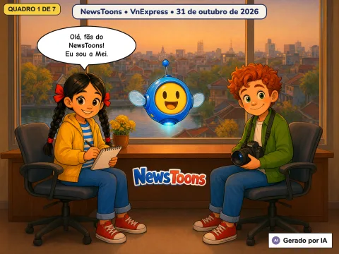
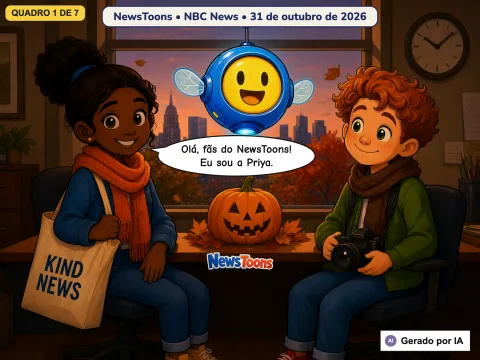
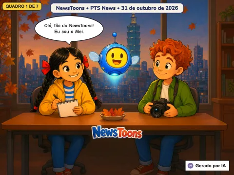
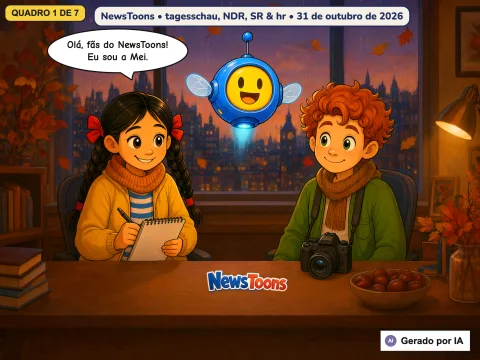
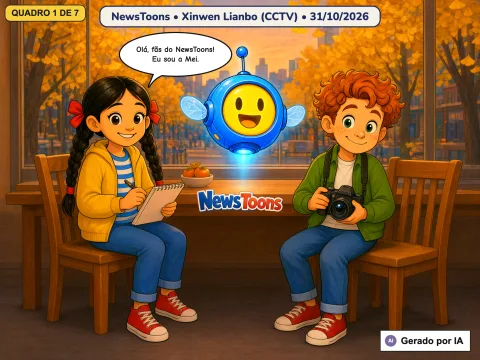
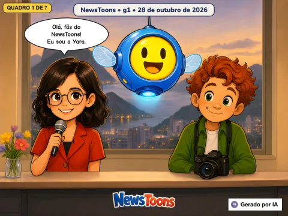
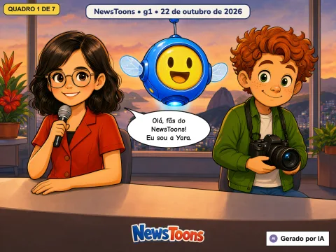
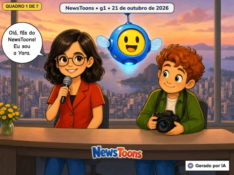
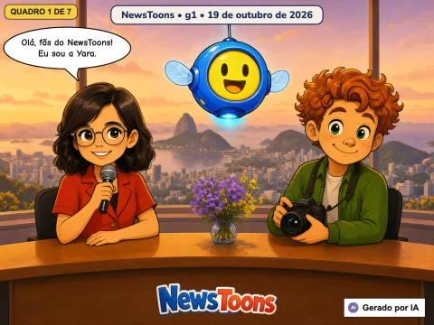
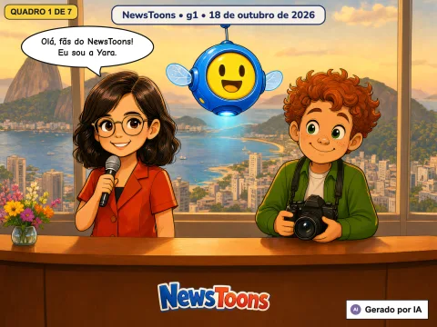

Círculos laranja: países com histórias em português
Gire o globo — escolha um país do NewsToons! 🌍
Todas as histórias

Filhotes de tartaruga, uma praia reabre, cuidando de túmulos antigos e um novo número um
2026-10-31
🇻🇳 do Vietnã · VnExpress

Relógios para trás, o rosto novo de uma estátua e lontras brincando com abóboras
2026-10-31
🇺🇸 dos EUA · NBC News

Dezesseis escritores num trem e entrar nas montanhas com segurança
2026-10-31
🇹🇼 de Taiwan · PTS News (公視新聞)

O pônei Micky, a faixa faz 75 anos, a última viagem da Emma e dachshunds no museu
2026-10-31
🇩🇪 da Alemanha · tagesschau, NDR, SR & hr

Preparando a ida à Lua, novas normas, ar líquido e folhas vermelhas na Grande Muralha
2026-10-31
🇨🇳 da China · Xinwen Lianbo (CCTV)
Câmeras inteligentes, vaga-lumes, o truque da frigideira quente e desafios de Halloween
2026-10-31

Um mundo novo além de Plutão e um filhote de lobo-marinho recebe ajuda
2026-10-28

Foguete de água, macacos-pregos curiosos, o céu de Van Gogh e uma onça volta para casa
2026-10-22

Sangue raro viaja de avião e dois filhotes de onça-parda ganham nome
2026-10-21
Caçadores de planetas, um passeio de cavalinho, cores num céu ensolarado e um bailarino que tentou de novo
2026-10-20

Um jovem gavião-real, 450 projetos de ciência, um foguete para uma lua de Marte e 46.045 garrafas e latas
2026-10-19

Uma rua para as tartarugas e um anel ao redor do sol
2026-10-18